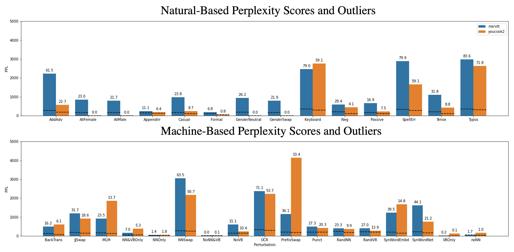
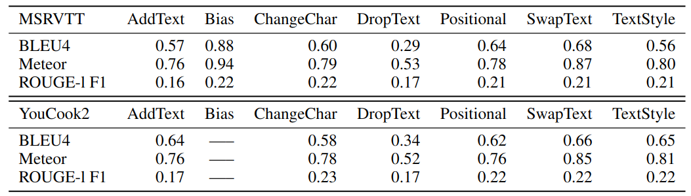

Multi-modal Robustness Analysis Against Language and Visual Perturbations
Datasets
MSRVTT dataset consists of 10,000 clips with an average length of 10 seconds each. These videos show a variety of activities that can be organized into 20 categories.
YouCook2 is a task-oriented cooking dataset with 2000 long untrimmed videos from 89 cooking recipes.
Each video is annotated with captions with provided temporal boundaries, allowing each video to be split into a set of
clips. There are 3,305 test clip-text pairs from 457 videos for evaluation.
YouCook2 has no indication of gender with phrases comprising 2x more nouns compared to MSRVTT while MSRVTT has a more
uniform distribution of words with an increased vocab size of 568 more unique words. YouCook2 are long, complex activities
split into clips with temporally bounded annotations.
Text Perturbations
Perlexity Scores Using GPT-3

The perplexity scores for the different text perturbations using GPT-3.
The bars represent the average perplexity for the entire corpus, the dashed lines represent the perplexity when
removing outliers based on a threshold of a 500, and the numbers atop the bars are the percent of outliers that
are removed when using the threshold. In summary, machine-learning based approaches are likely to struggle most with character swapping perturbations and shuffling of words.

We also compare the perturbed text to the original text using the traditional metrics, BLEU,
METEOR and Rouge. The results for these are averaged across the different perturbations for each type for both the
MSRVTT and YouCook2 datasets.
In summary, these scores indicate that we have a varying level of difficulty with our text perturbations across
categories, allowing for variable securities of distribution shift. The most challenging is DropText and
the least challenging is Bias.
Visual Perturbations
 Temporal Examples
Temporal Examples
 Spatio(and Spatio-Temporal) Examples
Spatio(and Spatio-Temporal) Examples